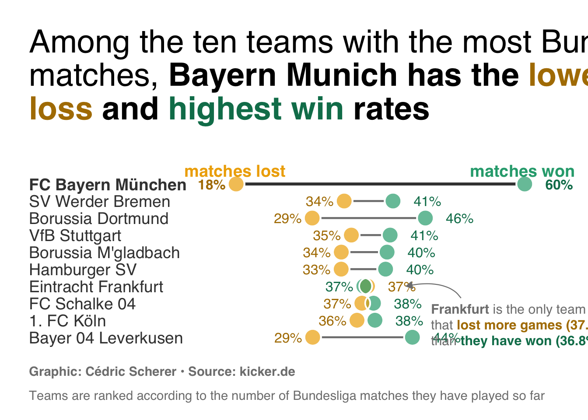

About
The chart we want to reproduce is a dumbell barplot about the number of shares and losses of the teams with the highest number of Bundesliga matches.
It has been created by Cédric Scherer. Thanks to him for accepting sharing his work here!
Libraries
In order to create this chart, we will use the following libraries:
Data
The data used for this chart can be load using the following code:
path = "https://raw.githubusercontent.com/JosephBARBIERDARNAL/R-graph-gallery/master/DATA/matches_win_and_losses.csv"
path = "DATA/matches_win_and_losses.csv"
df_matches = read.csv(path)
df_matches <-
tibble(
team = c("FC Bayern München", "SV Werder Bremen", "Borussia Dortmund", "VfB Stuttgart",
"Borussia M'gladbach", "Hamburger SV", "Eintracht Frankfurt",
"FC Schalke 04", "1. FC Köln", "Bayer 04 Leverkusen"),
matches = c(2000, 1992, 1924, 1924, 1898, 1866, 1856, 1832, 1754, 1524),
won = c(1206, 818, 881, 782, 763, 746, 683, 700, 674, 669),
lost = c( 363, 676, 563, 673, 636, 625, 693, 669, 628, 447)
) |>
mutate(team = fct_rev(fct_inorder(team))) |>
pivot_longer(
cols = -c(team, matches),
names_to = "type",
values_to = "result"
) |>
mutate(share = result / matches) |>
arrange(team, -share) |>
mutate(is_smaller = if_else(row_number() == 1, 0, 1), .by = team)
## number of not-Bayern teams for emphasis later
n <- length(unique(df_matches$team)) - 1Set up parameters for the chart
Before starting to actually create the chart, we need to set up some parameters that will be used later on such as colors and annotations.
Colors
Let’s define the colors that we will use for the
chart. We will use the clr_darken() function from the
prismatic package to create a darker
version of the base color.
Theme
We will use the theme_minimal() theme from the
ggplot2 package. We will then update it to match the style
of the chart.
Here are the main parameters that we will update:
base_familyandbase_sizeto set the font family and size for the whole chartaxis.titleto remove the axis titlesaxis.text.yto set the horizontal alignment of the y-axis labelspanel.grid.minorandpanel.grid.majorto remove the grid linesplot.titleandplot.captionto set the title and caption of the chartplot.marginto set the margins of the chartplot.backgroundto set the background color of the chartlegend.positionto remove the legend
theme_set(theme_minimal(base_family = "Saira Condensed", base_size = 22))
theme_update(
axis.title = element_blank(),
axis.text.y = element_text(hjust = 0, color = grey_dark),
panel.grid.minor = element_blank(),
panel.grid.major = element_blank(),
plot.title = element_textbox_simple(
size = rel(1.25), face = "plain", lineheight = 1.05,
fill = "transparent", width = unit(8, "inches"), box.color = "transparent",
margin = margin(0, 0, 35, 0), hjust = 0, halign = 0
),
plot.caption = element_markdown(
size = rel(.5), color = grey_base, hjust = 0, margin = margin(t = 20, b = 0)
),
plot.title.position = "plot",
plot.caption.position = "plot",
plot.margin = margin(25, 25, 15, 25),
plot.background = element_rect(fill = "white", color = "white"),
legend.position = "none"
)Annotations
And then we define the main annotations of the chart, using the
paste0() function that basically concatenates strings.
title <- paste0(
"Among the ten teams with the most Bundesliga matches, <b>Bayern Munich has the <b style='color:",
pal_dark[1], ";'>lowest loss</b> and <b style='color:", pal_dark[2], ";'>highest win</b> rates</b></b>"
)
caption <- paste0(
"<b>Graphic: Cédric Scherer • Source: kicker.de • </b>Teams are ranked according to the number of ",
"Bundesliga matches they have played so far"
)
callout <- paste0(
"<b>Frankfurt</b> is the only team listed<br>that <b style='color:", pal_dark[1],
";'>lost more games (37.3%)</b><br>than <b style='color:", pal_dark[2], ";'>they have won (36.8%)</b>"
)Dumbell chart
Now let’s actually create the chart. Here is what the code mainly does:
Layers: the chart is built using several layers such as
geom_point(),geom_text(),stat_summary(),geom_richtext(), etc.Scales: the
scale_x_continuous()andscale_color_manual()functions are used to set the x-axis and the colors of the chartLabels: the
labs()function is used to set the title and caption of the chartTheme: the
theme()function is used to set the theme of the chart
n <- length(unique(df_matches$team)) - 1
p = ggplot(df_matches, aes(x = share, y = team)) +
## dumbbell segments
stat_summary(
geom = "linerange", fun.min = "min", fun.max = "max",
linewidth = c(rep(.8, n), 1.2), color = c(rep(grey_base, n), grey_dark)
) +
## dumbbell points
## white point to overplot line endings
geom_point(
aes(x = share), size = 6, shape = 21, stroke = 1, color = "white", fill = "white"
) +
## semi-transparent point fill
geom_point(
aes(x = share, fill = type), size = 6, shape = 21, stroke = 1, color = "white", alpha = .7
) +
## point outline
geom_point(
aes(x = share), size = 6, shape = 21, stroke = 1, color = "white", fill = NA
) +
## result labels
geom_text(
aes(label = percent(share, accuracy = 1, prefix = " ", suffix = "% "),
x = share, hjust = is_smaller, color = type),
fontface = c(rep("plain", n*2), rep("bold", 2)),
family = "Familjen Grotesk", size = 4.3
) +
## legend labels
annotate(
geom = "text", x = c(.18, .60), y = n + 1.8,
label = c("matches lost", "matches won"), family = "Pally",
fontface = "bold", color = pal_base, size = 5, hjust = .5
) +
## call-out Eintracht
geom_richtext(
aes(x = .46, y = 3.3, label = callout), stat = "unique",
family = "Pally", size = 4, lineheight = 1.2,
color = grey_base, hjust = 0, vjust = 1.03, fill = NA, label.color = NA
) +
annotate(
geom = "curve", x = .49, xend = .42, y = 3.3, yend = 4, curvature = .35,
angle = 60, color = grey_base, linewidth = .4,
arrow = arrow(type = "closed", length = unit(.08, "inches"))
) +
coord_cartesian(clip = "off") +
scale_x_continuous(expand = expansion(add = c(.035, .05)), guide = "none") +
scale_y_discrete(expand = expansion(add = c(.35, 1))) +
scale_color_manual(values = pal_dark) +
scale_fill_manual(values = pal_base) +
labs(title = title, caption = caption) +
theme(axis.text.y = element_text(face = c(rep("plain", n), "bold")))
p

Going further
This post explains how to create a dumbell chart with nice features such as annotations, nice color theme and others, using R and ggplot2.
If you want to learn more, you can check the bar chart section of the gallery and another beautiful bar chart built with ggplot2.